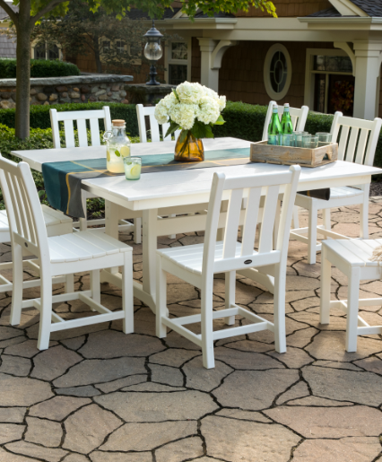

Why POLYWOOD?
POLYWOOD outdoor dining sets are designed with your family in mind. We’ve created durable outdoor dining tables and chairs that coordinate perfectly to make sets that can continually meet the dining demands and style preferences of any household. Whether you have a large family and favor a 9-piece outdoor dining set or 7-piece outdoor dining set with a rustic farmhouse design or have a smaller family with more contemporary tastes and desire a 5-piece outdoor dining set, there’s a curated outdoor dining set perfect for you.
Our modern outdoor dining sets are not only stylish — they’re sustainable too! All of our outdoor dining table and chairs are constructed from genuine POLYWOOD lumber, a durable material made using recycled ocean-bound and landfill-bound high-density polyethylene (HDPE) plastic. Our HDPE lumber is low-maintenance, easy to clean, can handle any outdoor climate, and keeps our planet healthy.
Outdoor Dining Set Features

Weather Resistance
Our genuine POLYWOOD lumber can handle all types of weather from hot desert heat to the most frigid blizzards.

Low Maintenance
All POLYWOOD furniture is easy to clean and never needs to be painted, stained, or waterproofed.

Durability
We proudly back our genuine POLYWOOD lumber with a 20-year residential warranty.

Sustainability
We give ocean-bound and landfill-bound plastic containers a second life by recycling them into our genuine POLYWOOD lumber.
Dining Set FAQs
Outdoor Dining Set Colors
Choose from a variety of vivid, long-lasting colors so you can have a dining set that coordinates perfectly with your outdoor decor whether you want an inviting white outdoor dining set, a cool slate grey outdoor dining set, or a bold black outdoor dining set. We use light-stable pigments, stabilizers, and UV inhibitors in our lumber to ensure the color and integrity of the product is protected against outdoor elements.
Where to Enjoy your Outdoor Dining Sets
On the Patio
The perks of patio dining are plentiful, and using one of our patio dining sets, such as the Chippendale 7-Piece Dining Set, in your space is one of them.
By the Pool
Mixing margaritas can be even more enjoyable when you sit back and relax in one of our bar sets poolside such as the Palm Coast 5-Piece Bar Set.
On the Front Porch
A cozy spot on your porch can fit a smaller dining set, such as the Coastal 3-Piece Bar Set, so you can enjoy an intimate meal with your friends.
Types of Outdoor Dining Sets
Outdoor Dining Set with Umbrella
Need a bit of shade while you enjoy Sunday brunch? Invest in an outdoor dining set with an umbrella. Many POLYWOOD tables in our dining sets come with a 1.625" center hole for a standard umbrella, such as the Nautical Adirondack 7-Piece Trestle Dining Set. We even offer umbrellas in multiple colors so you can pick one that complements your outdoor dining set.
.png)
Round Outdoor Dining Sets
If you have a smaller space, a round outdoor dining table set like the Chippendale 5-Piece Round Arm Chair Dining Set will meet your needs as it takes up less room than a square or rectangular dining set. Our round outdoor dining sets will allow you to create an intimate dining experience that you can enjoy season after season.
Bar-Height Dining Set
If you have an outdoor bar, you can bring additional style to the setting with a bar-height outdoor dining set or counter-height outdoor dining set. Our bar- and counter-height sets are perfect seating options for when you want to maximize your space and comfort.
.png)
Outdoor Dining Set with Bench
If you have an outdoor bar, you can bring additional style to the setting with a bar-height outdoor dining set, such as the Vineyard Curveback Adirondack 5-Piece Nautical Trestle Bar Set, or counter-height outdoor dining set. Our bar- and counter-height sets are perfect seating options for when you want to maximize your space and comfort.
Small Outdoor Dining Set
If you have fewer people to seat, a small outdoor table and chairs set, such as the La Casa Café 5-Piece Dining Set, is just what you need. With our small outdoor dining sets, you can entertain small groups in any season.
.png)
Outdoor Bistro Dining Set
Perfect for a smaller space, on a balcony, or around the pool, an outdoor bistro dining set, like the Signature 3-Piece Bar Set, can provide an intimate setting for two.

Furniture Reviews
We love a good review! Check out what other customers are saying below: